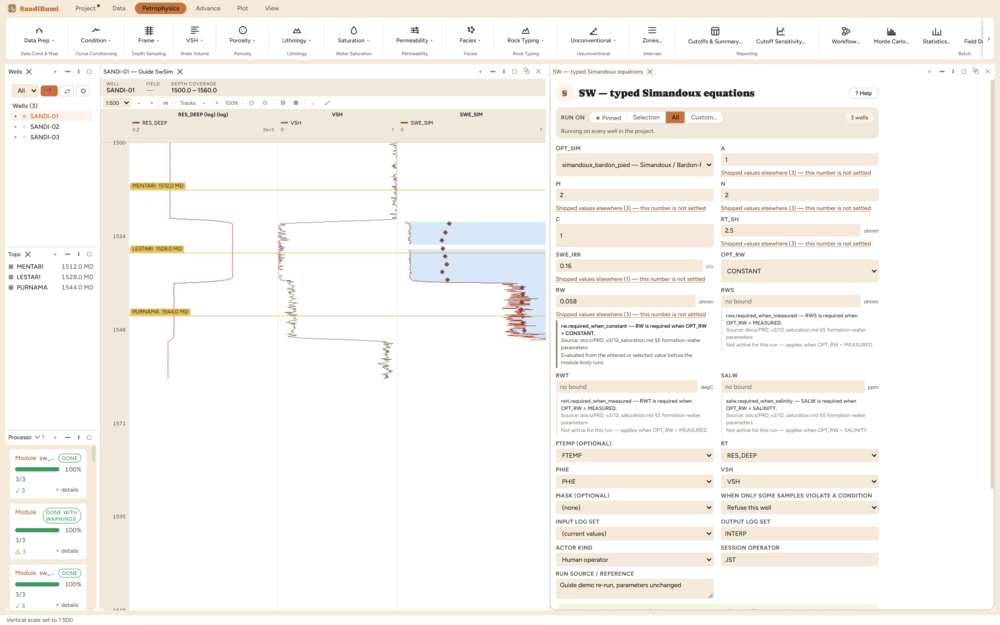

The Simandoux family as typed equations: every vendor ships a different arithmetic under the one name, so here each persisted id names exactly one published form and the run records which was used. Solved numerically for SWE.
simandoux_bardon_pied: 1/RT = PHIE^M·SWE^N/(A·Rw) + VSH·SWE/RT_SH simandoux_modified_slb: 1/RT = PHIE^M·SWE^N/(A·Rw·(1−VSH)) + VSH^C·SWE/RT_SH
Every vendor ships a different arithmetic under the name "Simandoux". This pane refuses to take part in that: each persisted id names exactly one published equation, and the run records which one it used. This walkthrough runs simandoux_bardon_pied (the Bardon & Pied form, the default) with the modified-SLB form (its VSH^C exponent and (1−VSH) divisor) one dropdown away.
Identical to the Indonesia run on purpose (same a, m, n, same RW 0.058, same RT_SH 2.5, same SWE_IRR 0.16, same PHIE_DEN and VSH inputs), so that any difference between the two output curves is the equation, never the picks. C stays at its cited default of 1 (it only participates in the modified form).

On these wells: 0 clean · 3 degraded, around 100 range-clamped samples per well, the same family as Indonesia's report. The pane solves the equation numerically for SWE (there is no closed form once the clay term and the exponent N share the unknown), which is invisible in the output and worth knowing only when a sample refuses: a refusal names the input that made the solve impossible rather than returning a half-converged number.
The three-way comparison completes here: in the clean gas sand
SWE_SIM's median is 0.084. Archie, Indonesia and Simandoux agree to the
third decimal, because with VSH near zero both shaly-sand equations collapse to the
clean-sand law they extend. The whole difference between the three methods lives in
the shaly intervals, and a track carrying all three SWE curves shows it directly.
Everything below is generated from the same manifest the application builds this module’s pane from — descriptions, defaults, sources, ranges and pre-run checks here are exactly what the running application enforces.
Each persisted id names one equation. simandoux_bardon_pied: 1/RT = PHIE^M*SWE^N/(A*Rw) + VSH*SWE/RT_SH. simandoux_modified_slb: 1/RT = PHIE^M*SWE^N/(A*Rw*(1-VSH)) + VSH^C*SWE/RT_SH. Legacy vendor tokens are accepted only as input aliases.
| Role | Description | Resolves to | Required | Notes |
|---|---|---|---|---|
| FTEMP | Formation temperature (precalc, for MEASURED/SALINITY) | FTEMP | no | resolved from computed curves only, never the RAW import store |
| RT | True formation resistivity | RES_DEEP | yes | — |
| PHIE | Limited effective porosity | PHIE | yes | — |
| VSH | Limited volume of shale | VSH | yes | accepts quantity kind: VSH |
Whole-well defaults; per-zone values from the Zones pane take precedence inside their zones (except where a parameter is marked one-value-per-well).
Tortuosity constant
archie_a); the pane lists them with sources at the point of choice.Cementation exponent
archie_m); the pane lists them with sources at the point of choice.Saturation exponent
archie_n); the pane lists them with sources at the point of choice.VSH exponent (simandoux_modified_slb only)
Shale resistivity
shale_resistivity); the pane lists them with sources at the point of choice.Irreducible effective water saturation
irreducible_swe); the pane lists them with sources at the point of choice.Rw at formation temperature (CONSTANT)
formation_water_resistivity); the pane lists them with sources at the point of choice.rw.required_when_constant — RW is required when OPT_RW = CONSTANT. Applies when: [object Object].
Measured water sample resistivity
rws.required_when_measured — RWS is required when OPT_RW = MEASURED. Applies when: [object Object].
Temperature of RWS measurement
rwt.required_when_measured — RWT is required when OPT_RW = MEASURED. Applies when: [object Object].
Formation water salinity
salw.required_when_salinity — SALW is required when OPT_RW = SALINITY. Applies when: [object Object].
Equation identity
simandoux_bardon_pied — Simandoux / Bardon-Pied (Geolog MODIFIED)simandoux_modified_slb — Modified Simandoux / Schlumberger (Geolog SCHLUM)simandoux_bardon_piedFormation water resistivity source
CONSTANTMEASUREDSALINITYCONSTANT| Name | Description |
|---|---|
| SWE_SIM | SWE from the selected typed Simandoux equation (unlimited) |
| SWE | Limited effective water saturation |
| VOL_UWAT | Volume of water (unflushed) |
| SW_METHOD | Producing saturation equation (categorical method code) |